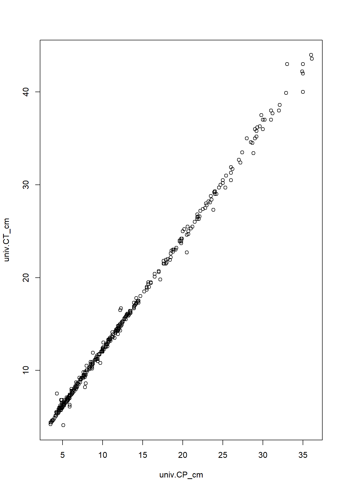
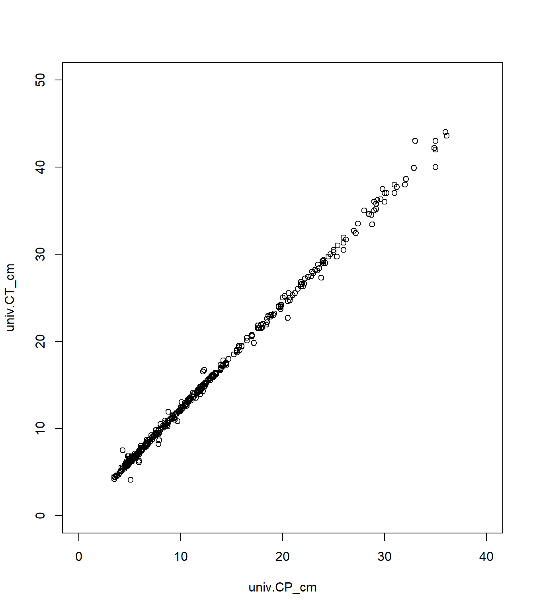
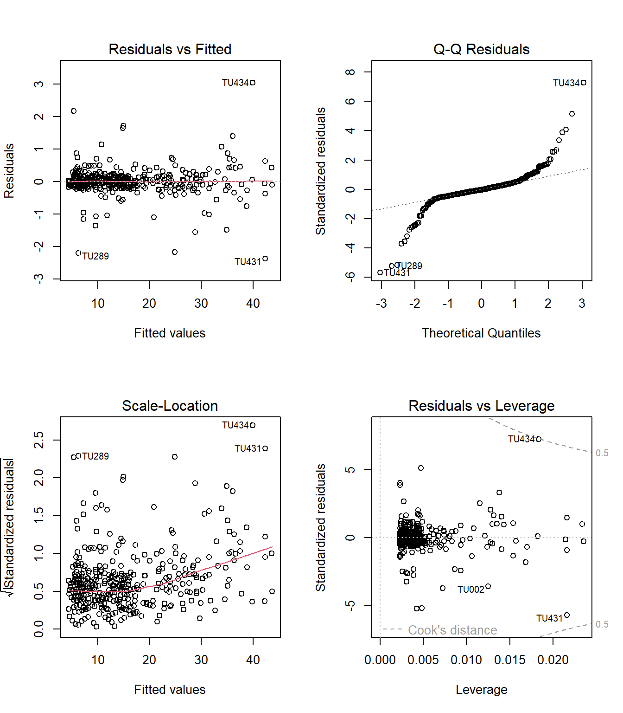
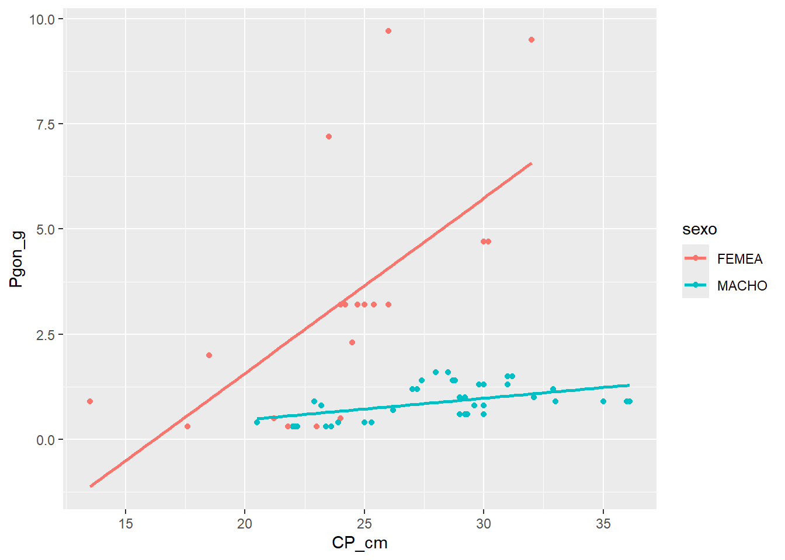

13 Correlação e Regressão
RESUMO
A estatística descritiva tem um papel importante a desempenhar na ciência. Quando problemas específicos são tratados na ciência, os dados precisam ser coletados, analisados e apresentados de forma concisa para que outros possam se beneficiar do que foi encontrado.
Apresentação
A estatística descritiva tem um papel importante a desempenhar na ciência. Quando problemas específicos são tratados na ciência, os dados precisam ser coletados, analisados e apresentados de forma concisa para que outros possam se beneficiar do que foi encontrado. Geralmente não é possível apresentar um conjunto de dados completo em uma publicação ou em um seminário e, mesmo que fosse, é improvável isso permitisse uma boa comunicação dos resultados da pesquisa. Em vez disso, os dados são geralmente resumidos como tabelas de frequência, histogramas e estatísticas descritivas que os leitores ou ouvintes podem assimilar prontamente, mas que ainda transmitem os elementos essenciais do conjunto de dados original. O principal objetivo do cálculo das estatísticas descritivas é transmitir informações essenciais contidas em um conjunto de dados da forma mais concisa e clara possível.
13.1 Correlação
O coeficiente de correlação produto-momento de Pearson (\(r\)) descreve a relação entre duas variáveis numéricas contínuas. A análise de correlação também pode ser aplicada entre variáveis categóricas binárias (coeficiente Phi) ou entre uma variável numérica contínua e uma variável categórica binária (correlação ponto-bisserial) (COAKES; STEED, 2001), porém essas abordagens não constituem o foco do presente texto.
Quando os pressupostos da correlação não podem ser adequadamente atendidos, utiliza-se uma alternativa não-paramétrica, a correlação por postos de Spearman (\(\rho\)).
Neste capítulo serão abordadas:
- Correlação simples bivariada (coeficiente de correlação produto-momento de Pearson)
- Correlação de Spearman (bivariada não-paramétrica)
- Correlação parcial
A correlação bivariada simples, refere-se à correlação entre duas variáveis contínuas e é a medida mais comum de relação linear.
Esse coeficiente possui valores possíveis variando de:
-1 a +1,
onde o valor indica a força da relação, enquanto o sinal indica a direção da relação.
A correlação parcial fornece uma medida única de associação linear entre duas variáveis, ajustando para os efeitos de uma ou mais variáveis adicionais.
As duas fórmulas medem aspectos diferentes da relação entre duas variáveis.
13.1.1 Coeficiente de correlação de Pearson (\(r\))
\[ r=\frac{\sum_{i=1}^{n}(x_i-\bar{x})(y_i-\bar{y})} {\sqrt{\sum_{i=1}^{n}(x_i-\bar{x})^2} \sqrt{\sum_{i=1}^{n}(y_i-\bar{y})^2}} \]
onde:
- \(x_i\) e \(y_i\): valores observados das variáveis (x) e (y) para a observação (i);
- \(\bar{x}\) e \(\bar{y}\): médias de (x) e (y);
- \(n\): número de observações.
13.1.1.1 Como a fórmula funciona
Primeiro, calculamos o desvio de cada observação em relação à média:
\[ x_i-\bar{x} \]
e
\[ y_i-\bar{y} \] Segundo, multiplicamos os desvios das duas variáveis:
\[ (x_i-\bar{x})(y_i-\bar{y}). \]
Se ambos os desvios forem positivos ou ambos negativos, o produto é positivo, indicando associação positiva. Se um desvio for positivo e o outro negativo, o produto é negativo, indicando associação negativa.
Terceiro, somamos todos esses produtos, obtendo uma medida da covariação entre as variáveis.
Por último, dividimos pelo produto dos desvios padrão, padronizando o resultado para que ele varie entre -1 e 1.
Assim:
\(r=1\): correlação positiva perfeita; \(r=-1\): correlação negativa perfeita; \(r=0\): ausência de correlação linear.
13.1.2 Coeficiente de determinação (\(r^2\))
Na regressão linear simples, temos:
\[ R^2=\frac{\text{SQ}*{\text{Regressão}}} {\text{SQ}*{\text{Total}}}. \]
onde:
- \(\text{SQ}_{\text{Total}}\): soma de quadrados total, representa toda a variação da variável resposta.
e
\[ \text{SQ}*{\text{Total}} =\sum*{i=1}^{n}(y_i-\bar{y})^2 \]
- \(\text{SQ}_{\text{Regressão}}\): soma de quadrados explicada pelo modelo.
Finalmente,
\[ \text{SQ}*{\text{Regressão}} =\sum*{i=1}^{n}(\hat y_i-\bar y)^2 \]
onde \(\hat y_i\) é o valor previsto pela regressão.
13.1.2.1 Como a fórmula funciona
O coeficiente de determinação calcula a fração da variação total de (y) que é explicada pela regressão.
Por exemplo, se
\(\text{SQ}_{\text{Regressão}}=80\) \(\text{SQ}_{\text{Total}}=100\),
então
\[ r^2=\frac{80}{100}=0.80. \]
Isso significa que 80% da variação da variável resposta é explicada pelo modelo, enquanto os 20% restantes são atribuídos a outros fatores ou ao erro aleatório.
13.1.3 Relação entre \(r\) e \(R^2\)
Na regressão linear simples existe apenas uma variável explicativa, e vale a relação
\[ r^2=R^2 \]
Assim, se
\[ r=0.90, \]
então
\[ R^2=0.90^2=0.81. \]
Ou seja, a correlação mede a força e a direção da relação linear entre duas variáveis, enquanto o coeficiente de determinação mede quanto da variação da variável resposta é explicada pelo modelo de regressão.
13.1.3.1 Não confundir com resíduos
No desvio em relação à média
\[ x_i - \bar{x} \]
é o desvio da observação em relação à média da variável (x).
Ele indica quanto um valor observado está acima ou abaixo da média e é utilizado no cálculo da variância, covariância e da correlação de Pearson.
Na regressão, o resíduo é
\[ e_i = y_i - \hat{y}_i, \]
onde:
- \(y_i\): valor observado;
- \(\hat{y}_i\): valor previsto pelo modelo.
O resíduo mede o erro de predição da regressão, ou seja, a distância vertical entre o ponto observado e a reta ajustada.
13.1.3.2 Pressupostos
A análise de correlação possui vários pressupostos:
- Pares relacionados: Os dados devem ser coletados em pares relacionados. Ou seja, se houver um escore na variável x, deve haver também um escore correspondente na variável y para o mesmo participante.
- Escala de medida: Os dados devem possuir natureza intervalar ou de razão.
- Normalidade: Os escores de cada variável devem apresentar distribuição normal.
-
Linearidade: A relação entre as duas variáveis deve ser linear.
- Homoscedasticidade: A variabilidade dos escores de uma variável deve ser aproximadamente a mesma em todos os valores da outra variável. Ou seja, refere-se à forma como os escores se distribuem uniformemente em torno da linha de regressão.
Os pressupostos 1 e 2 dependem do delineamento da pesquisa.
O pressuposto 3 pode ser avaliado utilizando os procedimentos descritos nos capítulos anteriores.
Os pressupostos 4 e 5 podem ser avaliados examinando gráficos de dispersão (scatterplots) das variáveis.
13.2 Sobre os dados
ATENÇÃO
Os links para baixar as planilhas necessárias para repetir esse tutorial podem ser encontrados na seção Arquivos disponíveis do Capítulo Bases de dados.
Ou, baixe aqui o arquivo tucuna.xlsx
13.3 Organização básica
dev.off() #apaga os graficos, se houver algum
rm(list=ls(all=TRUE)) #limpa a memória
cat("\014") #limpa o console
options(scipen = 999) #sem notação científica, oposto de scipen = 0Instalando os pacotes necessários para esse módulo
install.packages("openxlsx") #importa arquivos do excel13.4 Importando a planilha
Vamos importar a planilha de dados univariados tucuna.xlsx. Note que o símbolo # em programação R significa que o texto que vem depois dele é um comentário e não será executado pelo programa. Isso é útil para explicar o código ou deixar anotações. Ajuste a segunda linha do código abaixo para refletir “C:/Seu/Diretório/De/Trabalho/Planilha.xlsx”.
library(openxlsx)
univ <- read.xlsx("D:/Elvio/OneDrive/Disciplinas/_EcoNumerica/5.Matrizes/tucuna.xlsx",
rowNames = T, colNames = T,
sheet = "tucuna")
head(univ, 10)
head(univ[, 1:5], 10)## CT_cm PT_g CP_cm Ctubo_cm PC_g p_PT Pest_g Cest_cm gr_est ir_est
## TU001 32.4 468.8 27.2 39.8 458.9 2.111775 3.9 7.7 I 0.8319113
## TU002 33.4 520.0 28.8 14.3 507.4 2.423077 5.9 10.0 I 1.1346154
## TU003 27.3 301.5 23.8 13.0 283.4 6.003317 15.5 10.2 III 5.1409619
## TU004 13.2 28.2 11.0 16.5 27.7 1.773050 0.3 4.3 I 1.0638298
## TU005 14.3 38.9 11.9 15.5 37.7 3.084833 0.8 4.5 III 2.0565553
## TU006 22.7 431.7 20.5 24.2 418.7 3.011350 9.9 6.4 III 2.2932592
## TU007 23.2 544.0 19.2 25.0 520.1 4.393382 6.8 7.5 II 1.2500000
## TU008 13.5 161.6 11.5 17.5 157.0 2.846535 4.1 6.8 II 2.5371287
## TU009 24.6 200.5 20.5 25.7 195.9 2.294264 2.5 7.6 II 1.2468828
## TU010 19.4 86.7 16.0 18.3 84.5 2.537486 0.7 5.1 I 0.8073818
## Pint_g Cint_cm gr_int ir_int Pgon_g Cgon_cm emg ig
## TU001 4.8 38.3 II 1.0238908 1.2 7 IMATURO 0.25597270
## TU002 5.3 13.3 II 1.0192308 1.4 6.5 MADURO 0.26923077
## TU003 2.4 12.0 II 0.7960199 0.2 7.7 EM MATURACAO 0.06633499
## TU004 0.1 16.0 II 0.3546099 0.1 5 IMATURO 0.35460993
## TU005 0.3 15.0 II 0.7712082 0.1 3.2 IMATURO 0.25706941
## TU006 2.7 23.7 II 0.6254343 0.4 7.8 EM MATURACAO 0.09265694
## TU007 3.3 24.5 II 0.6066176 13.8 7.9 MADURO 2.53676471
## TU008 0.4 17.0 I 0.2475248 0.1 2.5 IMATURO 0.06188119
## TU009 2.0 25.3 II 0.9975062 0.1 6.5 EM MATURACAO 0.04987531
## TU010 1.4 17.7 II 1.6147636 0.1 6 IMATURO 0.11534025
## mes periodo estação sexo sexo2
## TU001 ago chuvoso inverno MACHO FEMEA
## TU002 ago chuvoso inverno MACHO FEMEA
## TU003 ago chuvoso inverno MACHO FEMEA
## TU004 ago chuvoso inverno MACHO FEMEA
## TU005 ago chuvoso inverno MACHO FEMEA
## TU006 set chuvoso inverno MACHO FEMEA
## TU007 set chuvoso inverno FEMEA MACHO
## TU008 set chuvoso inverno imaturo imaturo
## TU009 set chuvoso inverno MACHO FEMEA
## TU010 set chuvoso inverno MACHO FEMEA
## CT_cm PT_g CP_cm Ctubo_cm PC_g
## TU001 32.4 468.8 27.2 39.8 458.9
## TU002 33.4 520.0 28.8 14.3 507.4
## TU003 27.3 301.5 23.8 13.0 283.4
## TU004 13.2 28.2 11.0 16.5 27.7
## TU005 14.3 38.9 11.9 15.5 37.7
## TU006 22.7 431.7 20.5 24.2 418.7
## TU007 23.2 544.0 19.2 25.0 520.1
## TU008 13.5 161.6 11.5 17.5 157.0
## TU009 24.6 200.5 20.5 25.7 195.9
## TU010 19.4 86.7 16.0 18.3 84.5Exibindo os dados importados (esses comando são “case-sensitive” ignore.case(object)).
13.5 Correlação simples (bivariada)
No caso dos dados de dinâmica populacional do tucunaré (Cichla ocellaris), pode-se investigar a relação entre duas variáveis biométricas contínuas, como o comprimento padrão (CP_cm) e o comprimento total (CT_cm).
Suspeita-se que exista uma relação linear positiva entre essas variáveis, uma vez que indivíduos com maior comprimento padrão tendem também a apresentar maior comprimento total.
Assim, pode-se utilizar a correlação produto-momento de Pearson para responder à seguinte questão:
- Existe correlação significativa entre o comprimento padrão e o comprimento total dos indivíduos?
Hipótese nula (\(H_0\)): não existe correlação linear entre as duas variáveis na população.
Hipótese alternativa (\(H_1\)): existe correlação linear entre as duas variáveis na população.
Nesse caso, utiliza-se:
df<-data.frame(univ$CP_cm, univ$CT_cm, univ$PT_g)
#df
plot(df[,1:2])
# Teste de Pearson
cor(df, method="pearson")
cor.test(univ$CP_cm, univ$CT_cm,
method = "pearson") #"pearson", "kendall", "spearman"
# Teste de Spearman
cor(df[,1:2], method="spearman")
cor.test(univ$CT_cm, univ$CP_cm,
method="spearman")## univ.CP_cm univ.CT_cm univ.PT_g
## univ.CP_cm 1.0000000 0.9990120 0.9039503
## univ.CT_cm 0.9990120 1.0000000 0.9057485
## univ.PT_g 0.9039503 0.9057485 1.0000000
##
## Pearson's product-moment correlation
##
## data: univ$CP_cm and univ$CT_cm
## t = 467.22, df = 432, p-value < 2.2e-16
## alternative hypothesis: true correlation is not equal to 0
## 95 percent confidence interval:
## 0.9988068 0.9991819
## sample estimates:
## cor
## 0.999012
##
## univ.CP_cm univ.CT_cm
## univ.CP_cm 1.0000000 0.9976789
## univ.CT_cm 0.9976789 1.0000000
##
## Spearman's rank correlation rho
##
## data: univ$CT_cm and univ$CP_cm
## S = 31624, p-value < 2.2e-16
## alternative hypothesis: true rho is not equal to 0
## sample estimates:
## rho
## 0.9976789
Interpretação:
Os resultados da correlação de Pearson (cor.test(x, y, method = "pearson")) revelam a estatística do teste, t = 467.22 (para 432 graus de liberdade), indicando forte evidência contra a hipótese nula, e o valor de p, <0.001, indicando que a correlação é estatisticamente significativa. Também é mostrado o coeficiente de correlação (r) de 0.999 e o intervalo de confiança (95%) de 0.9988 ≤ ρ ≤ 0.9992.
Em uma correlação simples (bivariada), não existe uma distinção estatística obrigatória entre variável explicativa (independente) e variável resposta (dependente). A correlação mede apenas a força e a direção da associação entre duas variáveis (sem assumir causalidade), e o coeficiente de correlação é o mesmo independentemente da ordem das variáveis.
Entretanto, quando se faz um gráfico de dispersão, por convenção:
Eixo x (horizontal): variável explicativa (independente), quando houver uma hipótese causal;
Eixo y (vertical): variável resposta (dependente).
Por exemplo, nos dados de tucunaré, como nosso objetivo é verificar se o comprimento padrão (CP) explica o comprimento total (CT), temos que:
x: comprimento padrão (CP_cm)
y: comprimento total (CT_cm)
Se pretendemos ajustar uma regressão linear, a variável explicativa deve ser colocada no eixo x e a variável resposta no eixo y, pois a reta de regressão depende dessa escolha (veremos isso a seguir).
Na correlação de Spearman, os dados são transformados em ranks (postos).
| valor | rank |
|---|---|
| 10 | 1 |
| 12 | 2 |
| 12 | 2 |
| 15 | 4 |
Quando existem valores repetidos, no exemplo acima, 12 e 12, ocorrem empates (ties). O teste exato de Spearman assume ranks únicos, sem valores repetidos. Como nossos dados possuem medidas repetidas (muito comum em biometria), o R usa uma aproximação assintótica (removendo os empates), em vez do cálculo exato. Isso não invalida o teste, em caso de amostras grandes, mas significa uma limitação do teste de correlação não-paramétrico.
O QUE REPORTAR (Pearson): Foi observada correlação linear positiva extremamente forte entre o comprimento padrão (CP_cm) e o comprimento total (CT_cm) dos indivíduos analisados (correlação de Pearson: r = 0,957; p < 0,001; n = 434).
O QUE REPORTAR (spearman): Foi observada correlação positiva significativa entre comprimento padrão (CP_cm) e o comprimento total (CT_cm) (Spearman: \(\rho\) = 0,998; p < 0,001).
13.6 Correlação parcial
Além disso, pode-se avaliar se essa relação permanece significativa quando o efeito de uma variável adicional, como o peso corporal (PT_g) ou o período do ano (periodo), é controlada na análise. Nesse caso, a correlação parcial remove a parte da correlação explicada pelo peso. Ou seja, a correlação parcial faz a mesma coisa da bivariada, mas controla o efeito de uma terceira variável.
Espera-se que peixes mais pesados tendem a aumentar em ambos os comprimentos (CP e CT). Podemos, portanto, correlacionar CP_cm e CT_cm, e controlar pelo peso, para responder a seguinte questão:
- Comprimento padrão e comprimento total ainda se correlacionam independentemente do peso?
Hipótese nula (\(H_0\)): não existe correlação linear entre as duas variáveis na população, após controlar o efeito de uma terceira variável.
Hipótese alternativa (\(H_1\)): existe correlação linear entre as duas variáveis na população, após controlar o efeito de uma terceira variável.
cor(
univ[, c("CP_cm", "CT_cm", "PT_g")],
use = "complete.obs"
)
#install.packages("ppcor")
library(ppcor)
pcor.test(
univ$CP_cm,
univ$CT_cm,
univ$PT_g
)## CP_cm CT_cm PT_g
## CP_cm 1.0000000 0.9990120 0.9039503
## CT_cm 0.9990120 1.0000000 0.9057485
## PT_g 0.9039503 0.9057485 1.0000000
## estimate p.value statistic n gp Method
## 1 0.9945978 0 198.9168 434 1 pearsonInterpretação:
O resultado da correlação parcial (pcor.test()) de Pearson, isto é, a correlação entre CP_cm e CT_cm após controlar o efeito de uma terceira variável (PT_g), demonstra um coeficiente de correlação parcial \(r_p\) de 0.9946 (estimate), mesmo após remover o efeito do peso (PT_g). A estaística t (statistic) de 198.92 utilizada para testar a significância da correlação parcial e o número de observações (n) também são apresentados. O número de variáveis controladas (neste caso, apenas PT_g), é demonstrado em
gp = 1. O valor de p (<0,001) é extremamente pequeno. Finalmemte, o método utilizado (correlação parcial de Pearson) é apresentado.
Tivemos uma correlação parcial extremamente forte e positiva (r = 0.955) entre CP_cm e CT_cm, mesmo após remover o efeito do PT_g (peso total) (p < 0,001). Isso indica que a associação entre comprimento padrão e comprimento total permanece muito forte independentemente do peso corporal.
O QUE REPORTAR: Análise de correlação parcial revelou associação positiva extremamente forte entre comprimento padrão e comprimento total, mesmo após o controle do peso corporal (r = 0,955; p < 0,001).
13.7 Regressão simples
Nesse texto, optei por tratar correlação e regressão linear como diferentes aspectos de uma mesma análise (seguindo a visão de MCDONALD (2014)), apesar de que também podemos considerar correlação e regressão linear como um único teste estatístico (CLEOPHAS; ZWINDERMAN, 2016; COAKES; STEED, 2001).
A principal diferença entre correlação e regressão é que, na correlação, ambas as variáveis medidas são amostradas aleatoriamente a partir de uma população, enquanto na regressão os valores da variável independente (x) costumam ser escolhidos ou controlados pelo pesquisador (MCDONALD, 2014).
No nosso exemplo, o pesquisador interessado na biometria de Cichla ocellaris deseja compreender a relação entre o comprimento padrão e o comprimento total dos indivíduos. Em estudos pesqueiros, muitas vezes apenas parte do exemplar é obtida, seja devido ao processamento do pescado, danos durante a captura ou coleta incompleta em campo (ROYCE, 1942). Nesses casos, torna-se útil estimar o comprimento total do peixe a partir do comprimento padrão.
Já fizemos a avaliação da correlação entre as variáveis de interesse. Agora faremos uma análise de regressão linear entre essas variáveis, para que possamos, usando o modelo ajustado da regressão, prever o comprimento total a partir do comprimento padrão.
13.7.0.1 Variáveis independentes e dependentes
Quando se testa uma relação de causa e efeito, a variável que supostamente causa a relação é chamada de variável independente, e geralmente é representada no eixo x. Já a variável que representa o efeito é denominada variável dependente, e é representada no eixo y.
Em alguns experimentos, o pesquisador define os valores da variável independente. Por exemplo, se o interesse for avaliar o efeito da temperatura sobre a taxa de vocalização de anuros, os animais podem ser mantidos em câmaras com temperaturas controladas de 10°C, 15°C, 20°C (MCDONALD, 2014), e essa seria a variável independente. Uma outra possibilidade é quando, ambas as variáveis apresentam variação natural, mas a relação causal ocorre apenas em uma direção. Por exemplo, ao medir temperatura do ar e taxa de vocalização de sapos em diferentes noites, ambas variam naturalmente. Entretanto, caso exista relação causal, espera-se que a temperatura (independente) afete a vocalização (dependente), e não o contrário, já que a vocalização dos sapos não altera a temperatura do ambiente (MCDONALD, 2014).
Um último caso ocorre quando desejamos prever uma variável (dependente) a partir de uma segunda variável (independente). Em estudos biométricos como o em Cichla ocellaris, podemos investigar a relação entre comprimento padrão (CP_cm) e comprimento total (CT_cm). Nesse caso, podemos considerar comprimento padrão como variável independente, pois desejamos prever comprimento total a partir do comprimento padrão.
No R, isso é implementando usando a função lm()
lm(y ~ x, data = dados)onde:
o que está à esquerda de ~ é a variável dependente (resposta, y);
o que está à direita de ~ é a variável independente (explicativa, preditora, x).
13.7.0.2 Exemplo
No script a seguir, seguimos as seguintes etapas:
- Explorar relações biométricas
- Calcular correlações simples
- Teste de significância
- Ajuste da regressão linear
- Verificação de pressupostos
- Realização da ANOVA do modelo da regressão
- Aplicação de correção robusta
df<-data.frame(univ$CP_cm, univ$CT_cm, univ$PT_g)
#df
plot(df[,1:2],
xlim = c(0, 40),
ylim = c(0, 50))
#abline(modelo, col = "red", lwd = 2)
# Teste de Pearson
cor(df, method="pearson")
cor.test(univ$CP_cm, univ$CT_cm,
method = "pearson")
# Teste de Spearman
cor(df[,1:2], method="spearman")
cor.test(univ$CP_cm, univ$CT_cm,
method="spearman")
modelo <- lm(CT_cm ~ CP_cm, data=univ)
summary(modelo)## univ.CP_cm univ.CT_cm univ.PT_g
## univ.CP_cm 1.0000000 0.9990120 0.9039503
## univ.CT_cm 0.9990120 1.0000000 0.9057485
## univ.PT_g 0.9039503 0.9057485 1.0000000
##
## Pearson's product-moment correlation
##
## data: univ$CP_cm and univ$CT_cm
## t = 467.22, df = 432, p-value < 2.2e-16
## alternative hypothesis: true correlation is not equal to 0
## 95 percent confidence interval:
## 0.9988068 0.9991819
## sample estimates:
## cor
## 0.999012
##
## univ.CP_cm univ.CT_cm
## univ.CP_cm 1.0000000 0.9976789
## univ.CT_cm 0.9976789 1.0000000
##
## Spearman's rank correlation rho
##
## data: univ$CP_cm and univ$CT_cm
## S = 31624, p-value < 2.2e-16
## alternative hypothesis: true rho is not equal to 0
## sample estimates:
## rho
## 0.9976789
##
##
## Call:
## lm(formula = CT_cm ~ CP_cm, data = univ)
##
## Residuals:
## Min 1Q Median 3Q Max
## -2.3777 -0.1281 -0.0147 0.1260 3.0354
##
## Coefficients:
## Estimate Std. Error t value Pr(>|t|)
## (Intercept) 0.147883 0.037700 3.923 0.000102 ***
## CP_cm 1.206566 0.002582 467.221 < 2e-16 ***
## ---
## Signif. codes: 0 '***' 0.001 '**' 0.01 '*' 0.05 '.' 0.1 ' ' 1
##
## Residual standard error: 0.4216 on 432 degrees of freedom
## Multiple R-squared: 0.998, Adjusted R-squared: 0.998
## F-statistic: 2.183e+05 on 1 and 432 DF, p-value: < 2.2e-16
No caso do nosso exemplo, o modelo de regressão linear simples pode ser representado por:
\[ CT_{cm} = \beta_0 + \beta_1 CP_{cm} + \varepsilon \]
onde:
- \(CT_{cm}\) = comprimento total (variável resposta ou dependente);
- \(CP_{cm}\) = comprimento padrão (variável preditora ou independente);
- \(\beta_0\) = intercepto do modelo;
- \(\beta_1\) = coeficiente angular da regressão;
- \(\varepsilon\) = erro aleatório associado ao modelo.
Esse modelo busca prever o comprimento total dos indivíduos a partir do comprimento padrão.
No R, o modelo é ajustado utilizando a função:
modelo <- lm(CT_cm ~ CP_cm, data = univ)Interpretação:
A função summary() fornece todas as informações necessárias para interpretar os resultados da regressão linear.
A fórmula utilizada dentro da função lm() indica que CT_cm é a variável resposta (dependente) e CP_cm é a variável explicativa (independente). A equação do modelo ajustado seria:
\[ CT_{cm} = 0.147 + 1.206 \times CP_{cm} \] onde:
- 0,147 é o intercepto (\(\beta_0\))
- 1,206 é o coeficiente angular (\(\beta_1\))
O intercept (\(\beta_0 = 0.147\)) representa o valor esperado de CT_cm quando CP_cm=0 (geralmente sem interpretação biológica, mas importante em Modelos Lineares Generaliados). O coeficiente angular (\(\beta_1\) = 1,206) indica que, em média, para cada aumento de 1 cm em CP_cm, espera-se aumento aproximado de 1,206 cm em CT_cm. O erro padrão do coeficiente angular, que mede a precisão da estimativa de \(\beta_1\), foi de 0,00258.
Os resultados também mostram que O coeficiente de CP_cm é altamente significativo (t=467.22, p<0.001), indicando que o comprimento padrão é um forte preditor do comprimento total. Embora o modelo apresente um erro médio de aproximadamente 0,42 cm na predição do comprimento total, como mostrado no erro padrão residual de 0.4216. Os coeficientes de determinação (múltiplos e ajustados) de 0.998, indicam que o cerca de 99,8% da variação no comprimento total.
Finalmente, o teste F de 2.183e+05 e seu valor de p < 0.001, testam a hipótese de que o modelo não explica a variável resposta:
\(H_0\): Hipótese nula: \(\beta_1 = 0\), ou seja, a variável explicativa não exerce efeito sobre a variável resposta (o modelo não possui poder preditivo).
\(H_1\): Hipótese alternativa: \(\beta_1 \neq 0\), ou seja, a variável explicativa exerce efeito sobre a variável resposta (o modelo possui poder preditivo).
Como p<0.001, rejeita-se \(H_0\) e aceota-se \(H_1\), o modelo de regressão é estatisticamente significativo e tem poder preditivo para o comprimento total.
O QUE REPORTAR: A regressão linear simples revelou que o comprimento padrão foi um preditor significativo do comprimento total (\(\beta\) = 1.207 \(\pm\) 0.003, t\(_{(432)}\) = 467.22, p < 0.001). O modelo apresentou excelente ajuste aos dados (r\(^2\) = 0.998; F\(_{(1,432)}\) = 218300, p < 0.001), explicando aproximadamente 99,8% da variação no comprimento total. A equação ajustada foi \(CT_{cm} = 0.148 + 1.207 \times CP_{cm}\).
Na sequência avaliamos homogeneidade de variâncias. Para o caso de heterogeneidade de variâncias devemos usar a correção robusta de White (HC3). Antes disso realizamos uma ANOVA da regressão, para testar se o comprimento padrão explica uma parcela significativa da variação no comprimento total. A diferença entre anova() e Anova() só aparece em modelos com dois ou mais preditores. Anova(modelo, white.adjust = TRUE) calcula o mesmo teste, mas utilizando a correção robusta de White (HC3) para os erros padrão. Essa correção é recomendada quando há heterocedasticidade (variância não constante dos resíduos).
par(mfrow=c(2,2))
plot(modelo)
par(mfrow=c(1,1))
anova(modelo)
library(car)
Anova(modelo)
Anova(modelo, white.adjust=TRUE)## Coefficient covariances computed by hccm()## Analysis of Variance Table
##
## Response: CT_cm
## Df Sum Sq Mean Sq F value Pr(>F)
## CP_cm 1 38802 38802 218295 < 2.2e-16 ***
## Residuals 432 77 0
## ---
## Signif. codes: 0 '***' 0.001 '**' 0.01 '*' 0.05 '.' 0.1 ' ' 1
## Anova Table (Type II tests)
##
## Response: CT_cm
## Sum Sq Df F value Pr(>F)
## CP_cm 38802 1 218295 < 2.2e-16 ***
## Residuals 77 432
## ---
## Signif. codes: 0 '***' 0.001 '**' 0.01 '*' 0.05 '.' 0.1 ' ' 1
## Analysis of Deviance Table (Type II tests)
##
## Response: CT_cm
## Df F Pr(>F)
## CP_cm 1 75315 < 2.2e-16 ***
## Residuals 432
## ---
## Signif. codes: 0 '***' 0.001 '**' 0.01 '*' 0.05 '.' 0.1 ' ' 1
Em um novo exemplo, podemos analisar comprimento total e peso corporal em peixes. Em estudos de relação peso-comprimento normalmente considera-se comprimento como variável independente e peso como variável dependente.
df<-data.frame(univ$CP_cm, univ$CT_cm, univ$PT_g)
#df
plot(df[,c(2,3)])
#abline(modelo, col = "red", lwd = 2)
13.8 Gráfico de dispersão (scatterplot)
Um gráfico de dispersão mostra a relação entre duas variáveis quantitativas, representando cada observação como um ponto no plano cartesiano. Faremos isso usando o pacote ggplot2.
13.8.1 O que é ggplot2?
O ggplot2 é um pacote de visualização de dados para R, que permite definir visualmente o que se quer mostrar através de camadas adicionadas usando o símbolo +, usando os seguintes componentes principais:
Dados (
data): O ponto de partida para qualquer gráfico é um data frame — uma tabela com linhas (observações) e colunas (variáveis).Mapeamento estético (
aesthetics/aes): Define como variáveis do dataset mapeiam para propriedades visuais como posição (x, y), cor (color), tamanho (size) ou forma (shape), entre outros:
-
x: eixo horizontal -
y: eixo vertical -
color: cor -
size: tamanho -
shape: forma -
fill: preenchimento
- Representações geométricas (
geoms): Cada elemento visual do gráfico é adicionado como uma camada. Por exemplo:
-
geom_point()para gráficos de dispersão -
geom_line()para linhas -
geom_bar()para gráficos de barras
A estrutura geral de um gráfico em ggplot2 é:
ggplot(data = dados,
mapping = aes(x = var1,
y = var2)) +
geom_tipo()
?ggplotEsse modelo modular torna possível compor gráficos simples ou complexos com clareza.
library(ggplot2)
colnames(univ)
dados <- subset(univ,
sexo != "imaturo" & Pgon_g>0.2 & Pgon_g<10) #ou `filter` do dplyr
table(dados$sexo)
unique(dados$sexo)
ggplot(dados, aes(x = CP_cm,
y = Pgon_g,
color = sexo)) +
geom_point() +
geom_smooth(method = "lm",
se = FALSE)## `geom_smooth()` using formula = 'y ~ x'## [1] "CT_cm" "PT_g" "CP_cm" "Ctubo_cm" "PC_g" "p_PT"
## [7] "Pest_g" "Cest_cm" "gr_est" "ir_est" "Pint_g" "Cint_cm"
## [13] "gr_int" "ir_int" "Pgon_g" "Cgon_cm" "emg" "ig"
## [19] "mes" "periodo" "estação" "sexo" "sexo2"
##
## FEMEA MACHO
## 21 39
## [1] "MACHO" "FEMEA"
O gráfico acima ilustra uma regressão linear simples entre CP_cm e Pgon_g, com ajuste separado por sexo. As diferenças entre as retas e a dispersão dos pontos sugerem que o peso gonadal não depende apenas do comprimento corporal, mas também de outras características do indivíduo. Por isso, podemos testar como uma análise seguinte a regressão múltipla, incorporando simultaneamente CP_cm, sexo e outras possíveis covariáveis relevantes para estimar efeitos parciais e testar interações.
Assim, embora a regressão simples seja útil para descrever a associação bivariada, ela não controla simultaneamente múltiplas fontes de variação.
Sites para consulta
https://www.r-bloggers.com/2015/11/correlation-and-linear-regression/